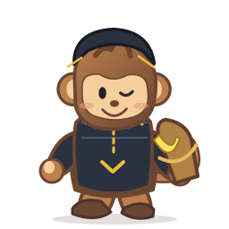
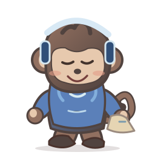
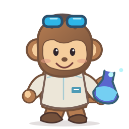
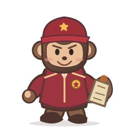

01学术派
🎓 学究猴
外套、红色领结和参考书。他是真的在研究香蕉。
这次不是换六张封面：六只猴子的躯干、四肢、服装、配饰、表情与动作资源都重新设计。比例更协调，站姿、装备、气质完全不同。下方图片直接读取和 Windows 桌宠相同的六个 SVG 角色文件。
外套、红色领结和参考书。他是真的在研究香蕉。

深色兜帽、香蕉背包和眨眼表情。最大的特长是制造意外。

蓝色连帽衫、耳机和半眯的眼睛。猴山唯一的睡眠研究权威。

护目镜、试管和实验服。每次研究都可能惊动猴山。

红色制服、勋章和猴山地图。自封文明建设总指挥。

绿色外套、小书和柔和表情。发明猴炸实验室时它正在读书。
点击任意一张角色卡，了解它在城市里的工作与性格。
Windows 客户端内还有眨眼、散步、奔跑、睡觉、摔倒、吃香蕉等动作，由同一套矢量角色驱动。